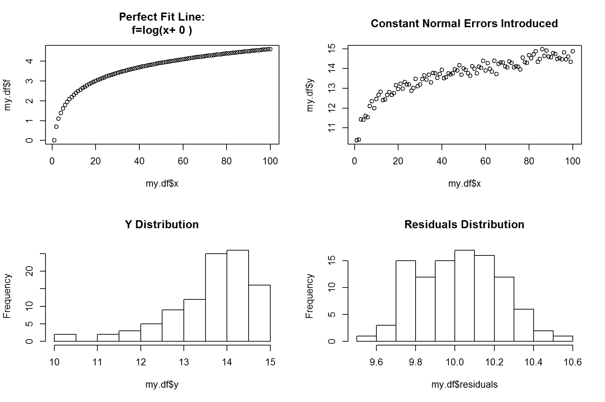
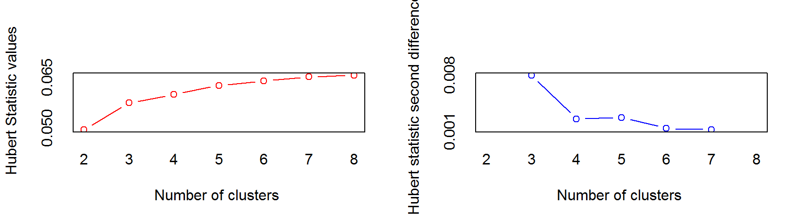
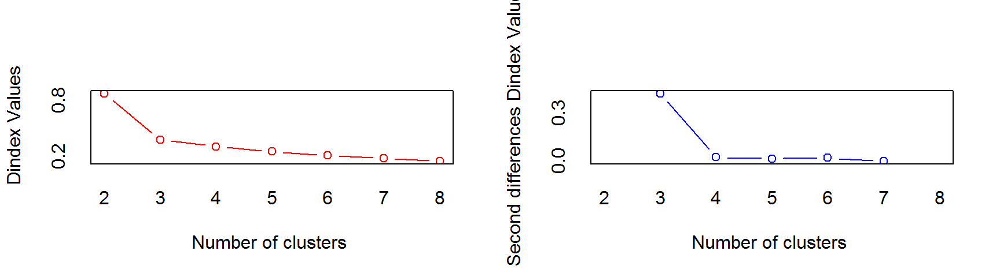
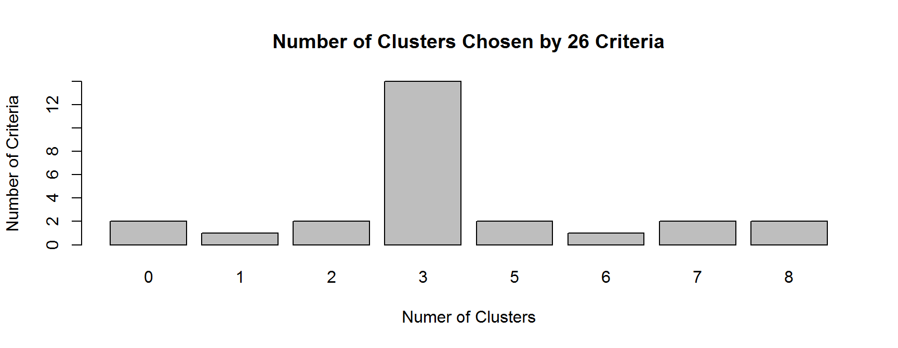
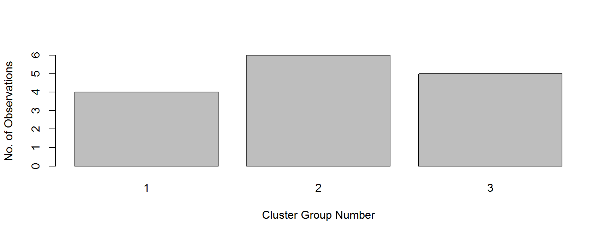
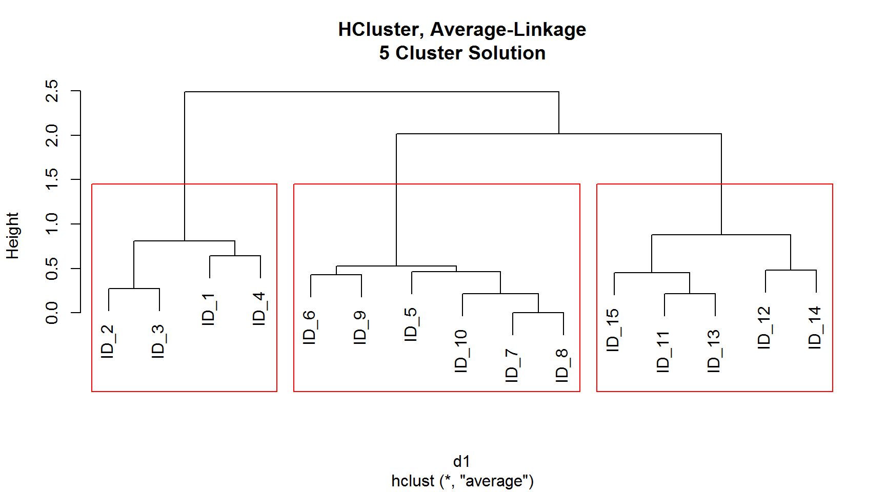

8.5 Hierarchical Clustering
- Hierarchical clustering is a widely used data analysis tool
- The idea is to build a binary tree of the data that successively merges similar groups of points
- Number of clusters (K) is not required initially
- It is an unsupervised learning
8.5.1 Clustering Process
This is how Hierarchical Clustering works:
1. Initially, put each data point in its own cluster
2. Calucate the distances between each cluster and all other clusters
3. Combine the two clusters with the smallest distance - This reduce cluster number by one
4. Repeat step (2) and (3) until all clusters have been merged into single cluster
8.5.2 Cluster Distance
Once distance for all data points has been measured, decide which of the five (5) methods below to measure distance between clusters:
- Single Linkage:
Shortest distance between points belonging to two clusters
- Complete Linkage (common):
Longest distance between points belonging to two clusters
- Average Linkage (common):
Average distance between all points in one cluster with all points the another cluster
- Centroid:
Find the centroid of each cluster and calculate the distance between centroids between both
hclust (d, method ='complete)
\(\quad\) `method = ‘single’, ‘complete’, ‘average’, ‘centroid’
Visualize the hierachical cluster using dendrogram, which displays how items are combined into clusters and is read from the bottom up.
As you can see, if the number of observations are very large, the dendrogram will be cluttered.
fit.complete = hclust (d1) # default method: 'complete'
fit.average = hclust (d1, method='average')
fit.single = hclust (d1, method='single')
fit.centroid = hclust (d1, method='centroid')8.5.3 Visualiasing H-Cluster
par(mfrow=c(2,2))
plot(fit.complete, main='HCluster, Complete-Linkage')
plot(fit.average, main='HCluster, Average-Linkage')
plot(fit.single, main='HCluster, Single-Linkage')
plot(fit.centroid, main='HCluster, Centroid-Linkage')
8.5.4 Evaluate Optimum Number of Clusters (K) ?**
NbClustpackage offers numerous 26 indices for determining the best number of clusters in a cluster analysis
- There is no guarantee that they will agree with each other. In fact, they probably won’t
- However, use this as a guidine and test few highest criteria score to determinee final number of cluster
library(NbClust)
nbc = NbClust(data.scaled, distance="euclidean", min.nc=2, max.nc=8, method="average")
Clearly NMbClust suggest three (3) clusters, it most criteria suggested so.
table( nc$Best.n[1,] )
barplot( table(nc$Best.n[1,] ),
xlab="Numer of Clusters", ylab="Number of Criteria",
main="Number of Clusters Chosen by 26 Criteria")##
## 0 1 2 3 5 6 7 8
## 2 1 2 14 2 1 2 2
8.5.5 Finalize Number of Cluster, K
Once K has been finalized, use cutree to produce a vector of cluster group number (in this example: 1,2,3 of total 3 groups) for all observations.
clusters = cutree (fit.average, k=3)
clusters # is a vector, marking cluster number for each observation## ID_1 ID_2 ID_3 ID_4 ID_5 ID_6 ID_7 ID_8 ID_9 ID_10 ID_11 ID_12
## 1 1 1 1 2 2 2 2 2 2 3 3
## ID_13 ID_14 ID_15
## 3 3 3str(clusters) # is a vector## Named int [1:15] 1 1 1 1 2 2 2 2 2 2 ...
## - attr(*, "names")= chr [1:15] "ID_1" "ID_2" "ID_3" "ID_4" ...barplot( table(clusters), xlab='Cluster Group Number', ylab='No. of Observations' ) # frequency for each cluster
Combination of plot and rect.hclust function plots dendrogram with clusters group marked in red.
plot(fit.average, main='HCluster, Average-Linkage\n5 Cluster Solution')
rect.hclust(fit.average, k=3) # superimpose cluster group in previous plot